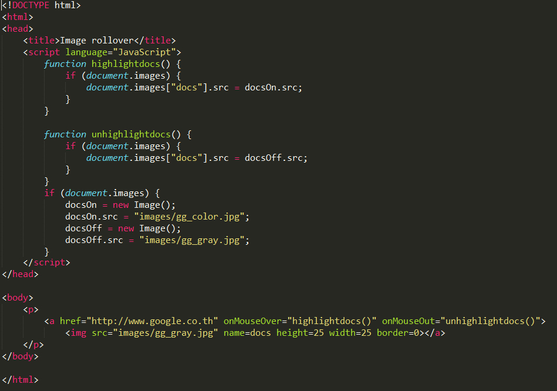

8. js08.html
a. onMouseOver
b. onMouseOut
c. document object
i. images
| js08.html | คำอธิบาย |
|  | 6 : ประกาศฟังก์ชั่น highlightdocs() 7 : เช็ค document.images , ให้ document.images ที่ชื่อ docs มีที่อยู่ที่ docsOn.src 12 : ประกาศฟังก์ชั่น unhighlightdocs() 13 : ให้ document.images ที่ชื่อ docs มีที่อยู่ที่ docsOff.src 17 : เช็ค document.images 18 : สร้าง object docsOn เป็น new Image 19 : ให้ docsOn.src อยู่ที่ (ยกตัวอย่างเป็น images/gg.color.jpg) 20 : สร้าง object docsOff เป็น new images 21 : ให้ docsOff.src อยู่ที่ (ยกตัวอย่างเป็น images/gg.gray.jpg) 27 : ลิ้งไปหน้า google |